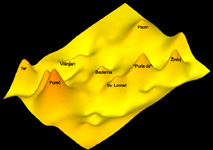
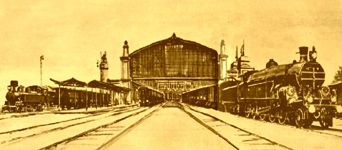

Main goal of SGLM group will be light pollution measurements of Istrian peninsula with a CCD camera. Measurements will result in a complete map of Istrian peninsula showing the distribution of light pollution. Also, we will try to improve measuring methods and software used during the work. The participants will be actively involved and gain first hand expirience in the problems of light pollution. This group has openings for only two participants. So get your ticket in time because it will be a hell of a ride...
Here you can find details about research and results.
Ivica Crljenica and Kim Dzanovic
Univeristy of Zagreb, Croatia
Ivica and Kim are physics students at University of Zagreb. Work at school is part of Sky Glow Local Monitoring project. Ivica has been with S3 since the beginning in 2001.
 The aim of this group is the analysis of influence of the modernization process on the demographic development in the Porec region. It is well known that the second half of the 19th century is the period of a strong demographic rise in Croatia and in Istria. According to the historical sources and the fieldwork we will analyze the way that rise happened in the Porec region. We will search for new economical activities in that region, identify settlements that gained economic prosperity and those settlements that lost their importance in new economic environment.
Here you can find details about research and results.
Robert Skenderovic
Croatian Institute for History
Robert Skenderovic is a research assistant at the Croatian Institute for History. The topic of his MA thesis was demographic development of Slavonia in the 18th century. The field of his research is demographic history, environmental history and the history of everyday life. He is also visitor teaching assistant at the Faculty of Philosophy at the University of Zagreb in the course "History Teaching".
Dunja Bonacci Skenderovic
Dunja Bonacci-Skenderovic holds an MA in Political Sciences from Central European University, Budapest. The field of her reserch is contemporary Croatian history. She was one of the organizers of the first Science Festival in Croatia this year.
Aim of the group is to explore and measure different kinds of electromagnetic radiation in natural and laboratory environment.
Here you can find details about research and results.
Lea Susac, Larisa Zoranic
Univeristies of Zagreb and Split, Croatia
All three leaders are enrolled in biophysics doctoral programme at Universities of Split and Zagreb. Ana is with S3 since it first took place in 2001. Her research interest include brain imaging using magnetoencefalography and educational physics. Larisa's research is directed towards secondary structure of membrane proteins.
There were 10 lectures during the school:
Nikola Biliskov (Rudjer Boskovic Institute, Zagreb, Croatia): Oscillatory reactions in chemistry and biology
Dr. Amir Mazur (Harvard University, Cambridge, USA): The goodnight story: A journey into sleep and dreams
Damir Kovacic (International School for Advanced Studies, Trieste, Italy): Speech Perception and Cochlear Implants & Cognitive Neuroscience of Language
Ana Bedalov (University of Jena, Germany): Planet Search
Damir Kovacic (International School for Advanced Studies, Trieste, Italy): Leonid meteor shower expedition to Mongolia
Robert Skenderovic (Croatian Institute for History, Zagreb, Croatia): History of beer in Croatia
Tonci Crmaric (California Insititute of Technology, Pasadena, USA): On Fourier Analysis and some of its applications
Goran Zgrablic (University of Lausanne, Switzerland): How to "photograph" proteins in action with ultrafast lasers
Martina Mijuskovic (Swiss Federal Institute of Technology, Zurich, Switzerland): Structural Biology
Branimir Lukic (Swiss Federal Institute of Technology, Zurich, Switzerland): Cytoskeleton and Cell Mechanics